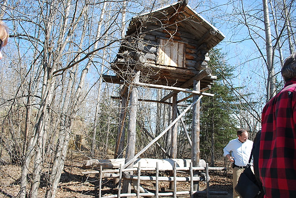

|

Food cache. These were often placed a mile from the dwelling.There is perhaps no other animal with a keener sense of smell than a bear. Bears rely on their sense of smell to locate mates, detect and avoid danger in the form of other bears and humans, identify cubs, and FIND FOOD. A bear has been known to detect a human scent more than fourteen hours after the person passed along the trail. |